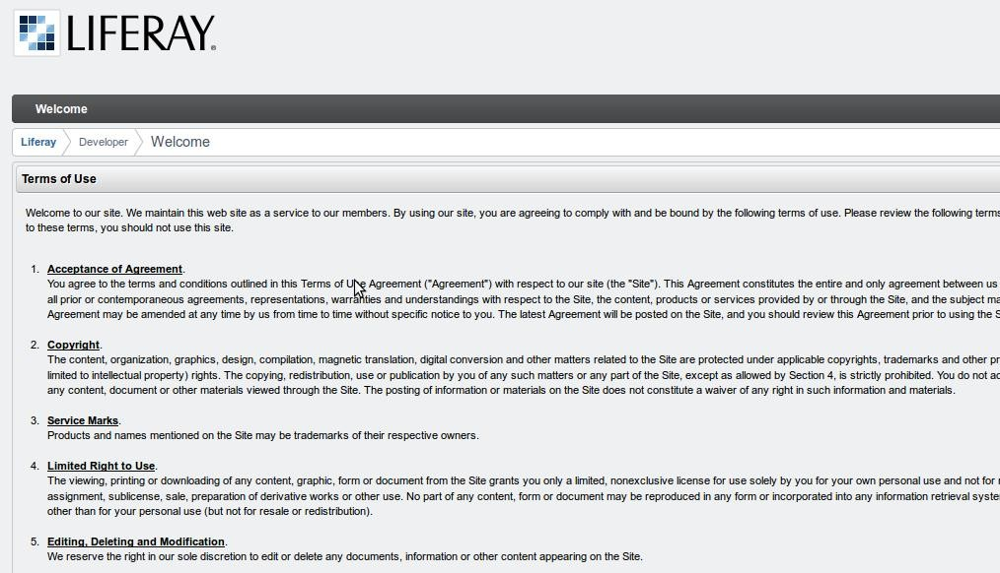
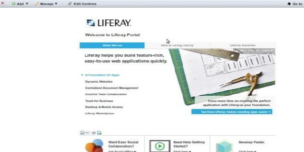
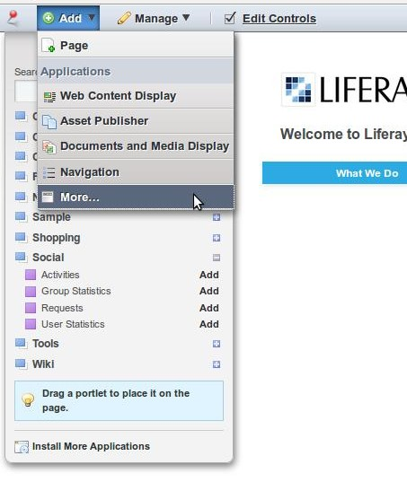
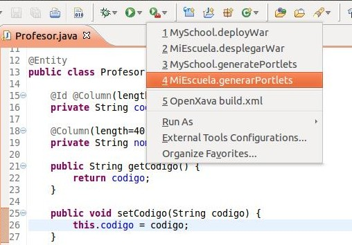
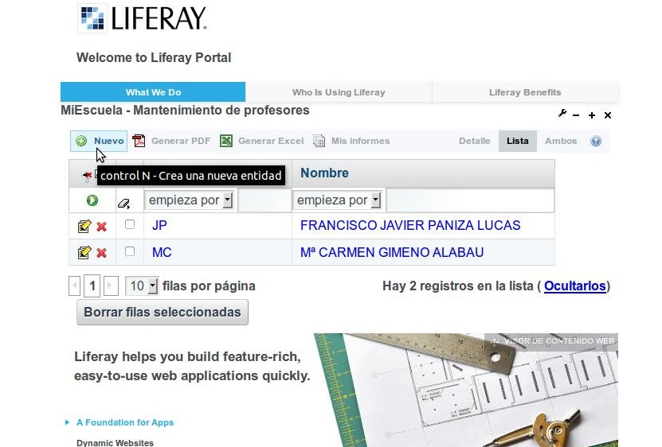

Desplegar Aplicación OpenXava en Liferay
Si ha finalizado la guía de inicio rápido, ya sabe como desplegar el proyecto MiEscuela en el Tomcat que trae OpenXava por defecto. Ahora desplegaremos este mismo proyecto en Liferay.
Descarga “Liferay Portal 6.1 Community Edition GA3 bundled with Tomcat” y descomprime el zip respectivo, obtendrás la carpeta liferay-portal-6.1.2-ce-ga3. Liferay 6.1 es soportado por Openxava 4.7 o superior.
Si usas una versión anterior a 5.0 de OpenXava copia el ejb.jar de {OX}/tomcat/lib a la carpeta {LP}/tomcat-7.0.40/lib/
Crea una carpeta miescuela en {LP}/data y copia los archivos de {OX}/workspace/MiEscuela/data/ a ésta; es decir a {LP}/data/miescuela.
Edita el archivo {LP}/tomcat-7.0.40/conf/context.xml añadiendo lo siguiente:
<Resourcetype="javax.sql.DataSource" name="jdbc/MiEscuelaDS" auth="Container" maxActive="20" maxIdle="5" maxWait="10000" driverClassName="org.hsqldb.jdbcDriver" username="sa" password="" url="jdbc:hsqldb:file:./data/miescuela/mi-escuela-db"/>Presta atención a la URL: la ruta de nuestra base de datos es la misma que donde copiamos los archivos del paso anterior, pero expresado con ruta relativa. Donde el “.” indica el home de Liferay.
Arranca Liferay: para esto ve a {LP}/tomcat-7.0.40/bin/ y ejecuta startup.sh o startup.bat dependiendo de tu sistema operativo. Abre tu navegador y ve a http://localhost:8080.Si es la primera vez que arrancas Liferay, tendrás que hacer una configuración inicial y aceptar los términos de uso:


Después de esta configuración inicial se mostrará la página de Bienvenida de Liferay.

En la parte superior izquierda (y dependiendo del idioma elegido en la configuración) encontramos el menú desplegable Add (Añadir) y el ítem More...(Más..) que al escogerlo despliega una lista de aplicaciones que contienen porlets disponibles para añadirlos a nuestras páginas.
Como puedes observar en la lista no aparece la aplicación MiEscuela. Vamos a desplegarla a continuación.

Genera los portlets del proyecto desde Eclipse.

La tarea ant genararPorlets ha creado en {OX}/workspace.dist/MiEscuela.dist un archivo MiEscuela.war.
Copia MiEscuela.war a {LP}/deploy (esta carpeta no aparecerá hasta que hayas arrancado Liferay por primera vez) y espera uno segundos a que el war desaparezca de la carpeta, lo que significa que tu aplicación ya está desplegada en Liferay. Ve al menú Add/More y la aplicación MiEscuela aparecerá, si no lo hace aún refresca la página.

Ahora ya puedes agregar tus portlets a cualquier página de Liferay. Solo dale Add (Añadir) al portlet y en la página de Bienvenida observarás:
